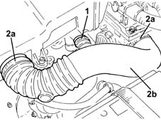

1048A32 sleeve from air cleaner to intake manifold - r + r
- Path
- Procedures > 10 ENGINE > 1048 ENGINE AIR SUPPLY CIRCUIT > 1048A vacuum air circuit > 1048A32 sleeve from air cleaner to intake manifold - r + r
- Kind
- repair procedure (removal / refitting; the operation number is the code)
- Applies to
- engines: 1.2 16v, 1.4 16v; all production periods
- Interactive page
- https://sloeber94.github.io/elrnDB-lYpsln/en/#/2428998
Applies to: engines: 1.2 16v; all production periods
 Removing
Removing
 Refitting
Refitting1. Loosen the band and disconnect the oil vapour intake pipe on the side of the sleeve from air filter to intake manifold.
2. Loosen the bands (2a) and remove the sleeve from air filter to inlet manifold (2b).

Applies to: engines: 1.4 16v; all production periods
Removing
Refitting1. Loosen the band and disconnect the oil vapour intake pipe on the side of the sleeve from air filter to intake manifold.
2. Loosen the bands (2a) and remove the sleeve from air filter to inlet manifold (2b).
Applies to: engines: 1.2 16v; all production periods
Refitting
RemovingPlace the sleeve from the air filter to the intake manifold and tighten the bands.
Connect the engine oil vapour inlet manifold on the side of the sleeve from air filter to inlet manifold and tighten the band.
Applies to: engines: 1.4 16v; all production periods
Refitting
RemovingPlace the sleeve from the air filter to the intake manifold and tighten the bands.
Connect the engine oil vapour inlet manifold on the side of the sleeve from air filter to inlet manifold and tighten the band.
Topics that link to this page (6)
- 1036L20 camshaft idler gears - replace
- 1036L40 mount for seal on camshaft in cylinder head extension complete with coil/s - includes cleaning of mating surfaces sealant application
- 1056B15 throttle body intergral with mds - r r
- 1056B50 coolant temperature sensor - r + r
- 1080E28 enablement solenoid for flow of fuel vapour to inlet - r+r
- 1088C30 thermostat unit - r+r